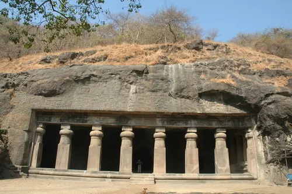
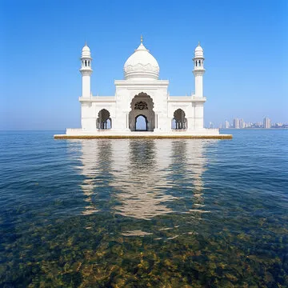
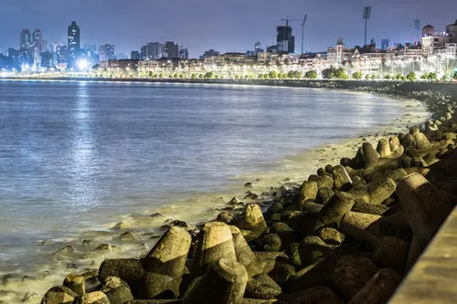
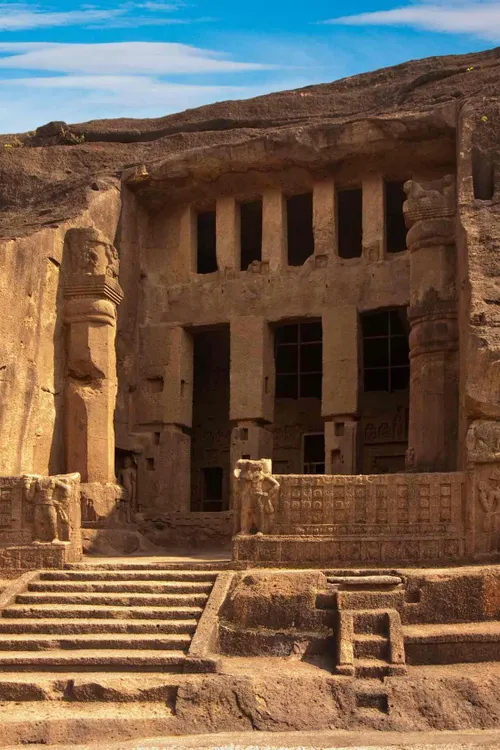

Heritage Sites of Mumbai
Mumbai, the city of dreams, is also a treasure trove of heritage. Here are six remarkable heritage sites in Mumbai:
Gallery:
Gateway of India
Iconic arch monument overlooking the Arabian Sea, built in 1924.
Chhatrapati Shivaji Maharaj Terminus
UNESCO World Heritage Site showcasing Victorian Gothic architecture.

Elephanta Caves
Ancient rock-cut caves with intricate sculptures dedicated to Lord Shiva.

Haji Ali Dargah
A mosque and tomb located on a picturesque islet.

Marine Drive
Known as the "Queen's Necklace," a scenic seaside boulevard.

Kanheri Caves
Buddhist caves nestled in the greenery of Sanjay Gandhi National Park.